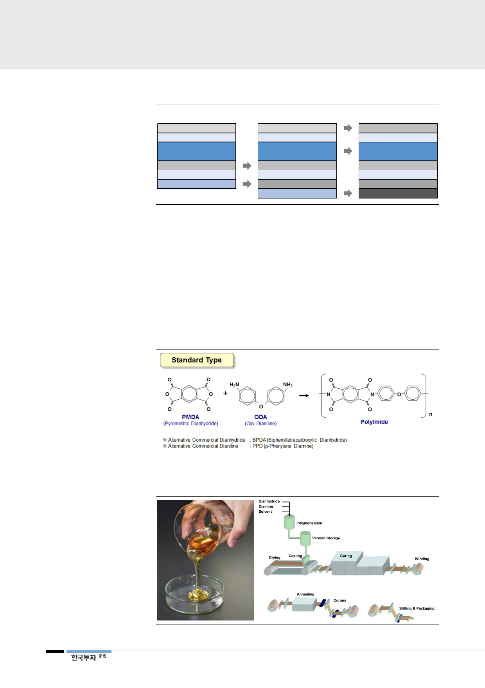

[그림 30] Rigid/flexible/foldable OLED패널 구조 비교
Rigid OLED
커버글라스
편광판
터치센서(ITO)
봉지유리
OLED 발광층
TFT 기판 (유리)
Flexible OLED
커버글라스
편광판
터치센서(ITO)
Thin Film Encapsulation
OLED 발광층
TFT 기판 (PI)
베이스 필름(PET)
자료: 한국투자증권
Foldable OLED
투명폴리이미드 (CPI)
편광판
터치센서(Metal mesh/AG
Nanowire 등)
Thin Film Encapsulation
OLED 발광층
TFT 기판 (PI)
베이스 필름(PI)
폴리이미드의 적용 분야가
늘어날수록 소재 업체로서의
밸류에이션 매력 커질 전망
폴리이미드는 내열성과 내화학성이 뛰어나고 안정적이어서 다양한 첨단 산업에
적용되고 있다. 원래 군사 및 항공우주 산업을 위해 개발되었으나, 강도와 유연성
이 주목 받아 FPCB, 절연소재 및 디스플레이용 필름으로도 활발히 사용되고 있
다. 폴리이미드의 또 다른 장점은 Roll-to-Roll(R2R) 프로세스에 적용이 가능
하다는 점이다. 향후 인쇄전자기술이나 필름형 디스플레이 패널 생산 등에 쉽게
PI필름이 적용될 전망이다. 전자제품이 점점 얇아지고 가벼워지며 유연해지는 트
렌드에 맞추어 폴리이미드의 채용 영역은 점점 넓어질 것이다.
[그림 31] SKC코오롱PI의 주력 폴리이미드 제품은 PMDA+ODA 중합물
자료: SKC, 한국투자증권
[그림 32] PI필름은 PI바니시를 열 경화 등의 공정을 통해 필름화해 만듦
주: PI바니시(좌), PI필름 제조 설비(우)
자료: SKC, 한국투자증권
20